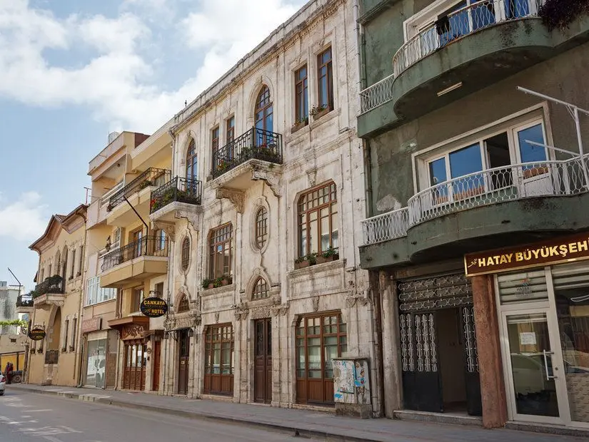

HATAY
13 farklı medeniyete ev sahipliği yapan köklü medeniyeti, farklı medeniyetlerin sentezi ile ortaya çıkmış olan UNESCO tescilli mutfağı, hoşgörünün adresi Hatay, Türkiye’ye örnek olacak bir şehir.
Bu medeniyetlerin havaya sinen efsununu hissedip, bıraktığı eserlerini görüp, mutfağının eşsiz lezzetlerini deneyimlediğimiz bir kültür başkenti olan Hatay'da benzersiz bir tatil geçirmeniz için tüm detayları sizin için derledik.
Hatay'ın Genel Özellikleri
Akdeniz Bölgesi’nde yer alan Hatay, doğusunda ve güneyinde Suriye, kuzeydoğusunda Gaziantep, kuzey ve kuzey batısında Osmaniye ve Adana, batısında ise Akdeniz ile çevrilmiştir. İlin yüzölçümü 5.403 km2 ’dir.
Cami, kilise ve havranın aynı mahallede, aynı yerde ve hatta sırt sırta yüzyıllarıdır sorunsuz bir şekilde birlikte yaşayan;
farklı dinlerde, farklı medeniyetlerde her türlü insanı içinde bulunduran Hatay, Batı ile Doğu Kültürünün kesiştiği, toplumların kültür alışverişinde bulunduğu bir coğrafyada yer almaktadır.
Coğrafi konumu dolayısıyla önemli bir ticaret ve transit geçiş yolu olan Hatay'ın, ülkemizin en güney ucunda yer almasının getirdiği sonuç ise Anadolu’yu, Ortadoğu’ya bağlayan önemli bir kavşak olmasıdır.
Ayrıca, İskenderun Limanı’yla Akdeniz’e açılan penceresinden Anadolu’nun ticari yaşamına büyük katkılar sağladığı yadsınamaz bir gerçektir.
Hatay’ın bilinen tarihinin M.Ö. 100.000’e kadar gittiği yönünde bulgular var. M.Ö. 300’lü yıllarda da Antakya’nın kurulduğu biliniyor.
Hititlerden başlayıp, Osmanlı’ya kadar uzayan zaman yolculuğuna da Mısırlılar, Urartular, Persler, Abbasiler, Selçuklular ve daha nice medeniyet dahil olmuş.
Hatay'ın İklimi
Hatay ilinde Akdeniz iklimi hüküm sürer. Senede ancak bir kaç gün kar yağar. Antakya, Dörtyol, İskenderun, Samandağ ilçelerinde kışlar ılık ve bol yağışlı, yazlar sıcak ve kurak geçer.
Yayladağı’nda ve iç kesimlerde iklim, kıyı bölgelerine oranla daha serttir. Ortalama yıllık sıcaklık 16-21 0C arasındadır. Ortalama yıllık yağış miktarı 570-1174 mm. arasında değişmektedir.
Nüfusu
Hatay nüfusu TÜİK tarafından 1.686.043 olarak açıklanmıştır. Açıklanan bu nüfusun Hatay erkek nüfusu 847.128 ve Hatay kadın nüfusu 838.915 olmuştur.
Hatay ilinin nüfusu en büyük ilçesi ANTAKYA (399.045) olmuştur.
Hatay'da Gezilecek Yerler
- Hatay Arkeoloji Müzesi
Türkiye’nin en büyük mozaik müzesi unvanını taşıyan Hatay Arkeoloji Müzesi, 3250 m2 alanı kaplıyor. Ayrıca dünyanın en büyük mozaiklerinin sergilendiği müze olma özelliğini de taşıyor.
Hatay’da arkeolojik kazılar 1932 yılında başlamış. 1948 yılına kadar da yurtdışından farklı üniversiteler ve araştırmacılar tarafından kazılar yapılmış. Eski müze binası 1939 yılında inşa edilmiş.
1948 yılında yani Hatay’ın anavatana katılışının 10. yılında ise müze ziyarete açılmış. O günkü şartlara göre tasarlanan bina yeterli olmayınca da bugün gezip görebileceğiniz Hatay Arkeoloji binası inşa edilmiş.
Müzenin esas zenginliğini merkezi Antakya’da olmak üzere Harbiye, Narlıca, Güzelburç, Samandağ ve çevresinde yapılan kazılar sonucu çıkartılan ve koleksiyonu tamamlayan mozaikler oluşturmaktadır.
Yeni Müze binasında Prehistorik, Paleolitik Kültür (Üçağızlı Mağarası Canlandırması), Amuk Kültürü (Amik Ovası Höyük Eserleri), Helenistik Dönem (Antakya'nın Kuruluşu), Roma Dönemi (Mozaikler), Nekropol Kültürü (Lahitler),
Bizans Dönemi (Mozaikler), Hatay Orta Çağ Dönemi ve Dinler, Hatay Arkeolojisi tarihi, Güncel kazılar/sergiler olmak üzere dokuz farklı temada 10 bin 700 metrekarelik sergileme alanına sahiptir.
2,47 metre uzunluğu, 1,22 metre genişliği ve 2,46 metre yüksekliğinin yanı sıra işçiliğiyle dikkati çeken Roma Dönemi'ne ait Antakya Lahdi için müzede özel bir oda yer alıyor.
ÖNERİMİZ:
Hatay Arkeoloji Müzesi her gün saat 08:30 ile 17:00 saatleri arasında ziyarete açık olduğu için bu saatlerde gitmeye dikkat edin.
Müzeyi sanal olarak ziyaret etmek için
tıklayınız.
- Harbiye (Daphne) Şelaleleri
Harbiye Şelalesi, Hatay ilinin Defne ilçesine bağlı olan Harbiye Mahallesine yer alır.
Şehir merkezine yaklaşık olarak 8 kilometre uzaklıkta bulunmaktadır.
Roma zamanlarından beri bilinen Harbiye veya Daphne Seleukos; Pallas, Kastalia ve Saramannda adları ile de tanımlanmaktadır.
Mitoloji tarihinde Nehir Tanrısının kızının peşinden koşan aşk, şiir ve müzik tanrısından Apollo'dan kurtulmak isteyen Daphne'nin hikayesi oldukça meşhurdur.
Tanrıya yalvaran Daphne'nin yakarışlarını duyan toprak ana, Daphne'nin bedenini ağaca, kollarını dallara ve saçlarını da yapraklara dönüştürür.
Şelalenin oluşumunun ise Dapne'nin gözyaşlarından oluştuğuna inanılmaktadır.
Yaz aylarında buz gibi kaya göletlerinde yüzebileceğiniz, çevresindeki kır bahçeleri ve mesire alanlarında yılın yorgunluğunu atabileceğiniz Harbiye Şelaleleri’nin seyir terasları, yürüyüş parkurları ve ahşap köprülerinden ise harika fotoğraflar çekebilirsiniz.
Çevresi antik Roma döneminden kalan tarihi yapılarla süslü Harbiye Şelaleleri, tarih gezileriyle de sıkça ziyaret ediliyor.
- Vespasianus ve Titus Tüneli
Antik dünyanın mühendislik harikası olarak kabul edilen Vespasianus ve Titus Tüneli, Hatay'ın en bilinen ve çok ziyaret edilen tarihi hazinelerinden biri.
Samandağ ilçesine 5 kilometre uzaklıkta yer alan ve Roma İmparatorluğu döneminde M.S. 69 yılında İmparator Vespasian tarafından yapımına başlanan devasa tünel, 81 yılında Vespasian’ın oğlu Titus tarafından bitirilebilmiş.
1380 metre uzunluk, 6 metre genişlik ve 7 metre yükseklikle görülmeye değer bir manzara sunan Titus Tüneli, Roma dönemi su tüneli mühendisliğinin en başarılı örneklerinden biri olarak kabul ediliyor.
Devasa kayalar arasında sellere ve su baskınlarına karşı inşa edilen Titus Tüneli, günümüzde çevresini saran endemik bitki türleri ve büyüleyici doğal güzelliklerle çok sevilen bir gezi alanı.
ÖNERİMİZ:
2014 yılında UNESCO Dünya Mirası Geçici Listesi’ne dahil edilen Titus Tüneli’ni gezdikten sonra yaklaşık 100 metre uzaklıkta yer alan ve onlarca Roma dönemi kaya mezarına ev sahipliği yapan büyüleyici
Beşikli Mağarası’nı da mutlaka uğramanızı öneririz.
- Habibi Neccar Camisi
Habib-i Neccar Camisi, Antakya’nın 638 yılında Müslüman Arapların eline geçtiği dönemde inşa edilmiştir.
Bugünkü Türkiye sınırları içerisinde inşa edilen ilk cami olduğu kabul edilmektedir.
Kurtuluş Caddesi'nde bulunan cami Hz. İsa’nın havarilerine ilk inanan ve bu uğurda canını veren bir Antakyalı'nın adını taşımaktadır.
Çevresine inşa edilen taş mimarili medrese odaları ve 19. yüzyıl şadırvanı ile etkileyici bir manzara sunan cami, Hatay inanç ve tarih gezilerinin değişmez adreslerinden biri olan, etkileyici dış mimarisinin yanı sıra çarpıcı iç dekorasyonuyla da ziyaretçilerini büyüleyen Habibi Neccar Camii’ne Kurtuluş Caddesi üzerinde kısa bir yürüyüşle kolayca ulaşarak ziyaret edebilirsiniz.
- Saint Pierre Kilisesi
Hatay St. Pierre Mağara Kilisesi, yalnızca 13 metre derinliğinde ve 9,5 metre genişliğinde, oldukça küçük bir yapı. Antakya-Reyhanlı yolu üzerinde bulunan kilise, tarihi önemi nedeniyle kentte en çok ziyaret edilen cazibe merkezleri arasında yer alıyor.
Üstelik kent merkezinden rahatlıkla ulaşılabiliyor.
Hatay’ın en önemli simgeleri arasında gösterilen kilise, adını Hz. İsa’nın 12 havarisinden biri olan St. Pierre ya da dilimizdeki karşılığı ile Aziz Petrus’tan alıyor.
Hristiyanlığı yaymak için M.S. 1. yüzyılın ilk yarısında bölgeye gelen Aziz Petrus, korunaklı yapısı nedeniyle gizli toplantılarını bu mağarada gerçekleştirmiş. Dolayısıyla mekan, dünyanın ilk mağara kilisesi unvanını taşıyor.
Hatta Aziz Petrus buradaki faaliyetlerinden dolayı zaman içerisinde Antakya kilisesinin kurucusu olarak nitelendirilmiş.
Anadolu’nun ilk camisi olan Habib-i Neccar Camisi gibi Hıristiyanlığın ilk kilisesi de Hatay topraklarında. 1983 yılında Papa’nın Hıristiyanlar için hac yeri ilan ettiği kilisenin ne zaman yapıldığı bilinmiyor.
Ama Hz. İsa’nın 12 havarisinden Aziz Petrus’un ilk vaazını burada verdiği ve dinleyen cemaatin de ilk Hristiyanlar olduğu yönünde bir inanış var.
Tarihe meraklı gezginler için ilgi çekici detaylarla bezeli St. Pierre Kilisesi, tıpkı geçmişte olduğu gibi günümüzde de Hristiyan dünyasındaki önemini koruyor.
Hatta 1983 yılında Papa VI. Paul’un kiliseyi hac yeri olarak kabul etmesi, bu önemi biraz daha pekiştirmiş.
Kente gelen yabancı uyruklu gezginlerin bu özelliğinden dolayı yoğun ilgi gösterdikleri kilise, geçmişte vaftiz törenlerine ev sahipliği yapmış. Mekan, müze statüsünde koruma altında olduğu için törenler günümüzde valilik izniyle gerçekleştirilebiliyor.
Bu törenlerde, eskiden kayalardaki çatlaklardan sızıp bir oyukta biriken su kullanılıyormuş. Sızıntı, aslında halen daha devam ediyor. Fakat gerek şifalı olduğu düşüncesi gerekse de tektonik faaliyetler sonucunda birikintinin eski seviyesine asla ulaşamadığı söyleniyor.
ÖNERİMİZ:
Pazartesi hariç her gün 08:30 ile 17:00 saatleri arasında (yaz döneminde 10:00'da açılıyor) ziyarete açık olduğu için bu saatlerde gitmeye dikkat edin.
- Çevlik Plajı
Hatay'ın turistik ilçesi Samandağ'da Akdeniz’in tadını çıkarabileceğiniz başka bir popüler plajı olan Çevlik Plajı’na da mutlaka uğramalısınız. Ücretsiz olarak faydalanabileceğiniz Çevlik Plajı, 14 kilometre uzunluğuyla Türkiye'nin en uzun plajlarından biri olmasıyla ünlü.
İnce kumlarla süslü geniş sahilde plaj kulüpleri, su spor merkezleri, güneş şemsiyesi kiralayabileceğiniz turistik tesisler ve kafeler gibi pek çok olanak bulabilirsiniz.
Deniz kaplumbağalarının dünyadaki sayılı yumurtlama alanlarından biri olmasından dolayı koruma altına da alınan Çevlik Plajı’nın altın kumlarında havlunuzu sererek güneşlenebilir ve kilometrelerce uzanan sahil yolunda keyifli akşam yürüyüşlerine çıkarak büyüleyici gün batımı manzaraları izleyebilirsiniz.
- Hatay Uzun Çarşı
Hatay'ın simgesel noktalarından biri olan ve şehri gezen turistlerin alışveriş yapmak için ilk ziyaret ettiği yerler arasında bulunan Uzun Çarşı, yüzlerce yıldır Hatay'ın ticaretinin kalbinin attığı yerlerden. İpek Yolu üzerinde yer almasından dolayı tarihin her döneminde oldukça hareketli olan çarşı, 17. yüzyılda yapılan Kurşunlu Han’ın yüzlerce dükkanı için de sıkça ziyaret ediliyor.
Hatay Uzun Çarşı’nın rengarenk tezgah ve dükkanlarında şifalı otlarından çeşit çeşit baharatlara, zeytinyağı ve defne ürünlerinden el yapımı süs eşyaları ve bakır ürünlerine kadar binlerce ürünü bir arada bulabilirsiniz. Bozulmamış otantik atmosferiyle geziler yapmak için de ideal olan Hatay Uzun Çarşı’da ünlü künefecilere de uğrayabilir,
sevilen Hatay lezzetlerini tadabilir veya asırlık çınar ağaçları altındaki çay bahçelerinde mola vererek yorgunluk atabilirsiniz.
- Amanos Dağları
Nur Dağları olarak da bilinen ve el değmemiş doğal güzellikler arasında 175 kilometre boyunca uzanan Amanos Dağları, Hatay'ın en popüler doğa sporları merkezi konumunda. Özellikle bahar ve yaz aylarında kaya tırmanma, dağcılık, kampçılık, dağ bisikletçi ve trekking turlarının düzenlendiği Amanos Dağları’nın her köşesi irili ufaklı şelaleler, dereler ve tarihi hazinelerle çevrili.
Avrupa'nın korunması gereken 100 ormanından birine ev sahipliği yapan, Doğu Karadeniz ve Akdeniz bitki türlerini bir arada görme şansı bulabileceğiniz Amanos Dağları; ak pelikan, kara leylek, yoz atmaca ve orman kartalı gibi yüzlerce kuş türünün yanı sıra vahşi yaşam zenginliğiyle de doğa severleri büyüyor.
Dağ eteklerinde büyüleyici bir manzara sunan Kapalı Değirmenli Şelalesi ile yaz aylarının adreslerini değişmez adreslerinden biri haline gelen Amanos Dağları’nda yine dağ eteklerindeki bir mağara içine inşa edilen Aziz Pierre Kilisesi, doğal güzellikler arasında gizlenen Sarıseki Mağarası ve Hatay'ın önemli tarihi yapılarından biri olan Aziz Simeon Manastırı gibi pek çok etkileyici yeri de keşfe çıkabilirsiniz.
- Arsuz İlçesi
Hatay'ın Akdeniz kıyısında uzanan turistik ilçesi Arsuz, şehre 85 kilometre uzaklıkta tarihi ve doğal güzellikleriyle keyifli bir günübirlik gezi sunuyor. Her yıl binlerce yerli ve yabancı turisti misafir eden Arsuz’da hem büyüleyici Akdeniz sularının tadını çıkarabilir hem de rehberliği turlara katılarak binlerce yıllık etkileyici tarihi yapıları keşfedebilirsiniz.
Hz. Meryem'in yıkandığına inanılan ve kutsal kabul edilen Meryem Ana Havuzu’na sadece 7 kilometre uzaklıktaki ilçede M.S. 600 yılından kalma mozaikler ve mezarlarıyla dikkat çeken Kutsal Havariler Kilisesi’ne uğrayabilir, 500 yıllık olduğu tahmin edilen etkileyici Mar Yuhanna Kilisesi’ni ziyaret edebilirsiniz.
Deniz seviyesinden 100 metre yükseklikte 1933 yılından beri hizmet veren Aruz Deniz Feneri’nde harika fotoğraflar çekebileceğiniz gezinizde Arsuz Plajı ve Gözcüler Plajı’nın ince kumlu sahilinde de tüm gün güneşlenebilirsiniz. Arsuz’da her bütçeye uygun otel bulabilir, gezinizden sonra ise sahil kenarındaki restoranlarda mevsimlik balıklar veya ünlü Hatay lezzetleri tadarak güzel bir akşam geçirebilirsiniz.
- Eski Antakya Evleri
Hatay'ın her köşesi birbirinden güzel konaklarla çevrili ve Antakya’nın dar sokaklarını süsleyen tarihi evler, Hatay’ın en çok ziyaret edilen yapıları arasında.
Yılın her mevsimi fotoğraf safarilerinin düzenlendiği, yöresel taş ve ahşap mimarili 350'ye yakın tarihi evin sıralandığı Antakya’daki bu büyüleyici evlerden bazıları yüzlerce yıldır hiç değişime uğramadan kalmış, bazıları ise restore edilmiş.
Zenginler Mahallesi’nin yanı sıra Asi Nehri ile Habibi Neccar Tepesi arasında yer alan Kurtuluş Caddesi'nde de en güzel örneklerini görebileceğiniz eski Antakya evlerinin müze ve sanat galerisi olarak hizmet verenlerinde dönem mobilyaları ve antikalarla süslü iç bölümleri gezerek güzel fotoğraflar çekebilirsiniz.

Kurtuluş Caddesi Eski Antakya’nın içinden geçen, eski şehrin en işlek ve hareketli caddesi. Bu cadde dünya üzerinde ışıklandırma yapılmış ilk cadde olması nedeniyle dünya tarihi için önemli bir nokta.
Hatay'da Ne Yemelisiniz?
Hatay denildiğinde akla gelen en önemli özelliklerden biri elbette mutfağı. Kebaplar, aş ve pilavlar, sulu yemekler ve tatlılar unutulmayacak Hatay lezzetleri arasında yer alıyor.
Hatay mutfağında 600’ün üzerinde yemek ve tatlı çeşidi bulunmaktadır.
Özellikle baharat ve acı kullanımının yoğun olduğu Hatay mutfağında en dikkat çekici tatlardan bir diğeri ise elbette ekşi. Toprak ve iklimin etkisiyle çiğ sebzeler ve otlar lezzetin doruğa çıkması konusunda önemli bir rol oynuyor.
Zeytinyağı ise yöre mutfağının adeta vazgeçilmez olarak anılıyor. Hatay’ın meşhur yemekleri Hatay seyahatinizi çok daha özel bir anı haline getirmek adına iddialıdır.
Hatay özellikle yemek turizmi sevenler için oldukça önemli noktalardan biridir.
Hatay’dan, bu lezzetlerin yalnızca birkaçını ise sizin için aşağıda sıraladık.
- Hatay Kâğıt Kebabı
Hatay usulü Kâğıt Kebabı, diğer kebaplardan oldukça farklı özelliklere sahip. Tamamen yöreye has şekilde hazırlanan bu kebap, Hatay mutfağının öne çıkan yöresel lezzetlerinden biri.
Kültürünün Arap mutfağına dayandığı bilinse de Hatay usulü hazırlanan Kâğıt Kebabı’nın oldukça zengin bir yemek olduğunu söylemek gerekiyor.
Kâğıt Kebabı hazırlanırken et satır aracılığı ile kıyma haline getiriliyor. Dolayısıyla makineyle çekilmiş bir kıyma kullanılmıyor. Bunun yanı sıra maydanoz, sarımsak, biber ve domates de kıymaya eşlik ederek eşsiz bir lezzet ortaya çıkarıyor.
Hatay’ın neredeyse bütün restoran ve lokantalarında bu kebabı deneyebilirsiniz.
- Humus
Günümüzde neredeyse her şehirde bulunan restoran ve meyhanelerde kolaylıkla bulabileceğiniz humus, Hatay’a ait eşsiz bir meze. Orta Doğu’dan ülkemize gelen ve orijinali mutlaka Hatay’da tüketilmesi gereken Humus, nohut ile hazırlanan bir meze.
İçerisinde tahin, limon suyu ve zeytinyağı gibi malzemeler de yer alıyor.
Farklı versiyonları ile karşılaşmanın mümkün olduğu bu mezeyi Hatay’da mutlaka denemeniz gerekiyor.
Merkezde bulunan restoranların neredeyse tamamında Humus’u bulmamız mümkün. Özellikle rakı sofraları için vazgeçilmez lezzetlerinden biri olan humus yalnızca yemek olarak tüketilebilecek kadar zengin bir içeriğe sahip.
İçeriğinde bulunan nohut sayesinde uzun süre tok kalmanızı sağlıyor.
Hem yaz hem de kış aylarında tüketilen humus, özellikle akşam yemeklerinin vazgeçilmezi!
- Kaytaz Böreği
Antakya mutfağının en lezzetli hamur işi olması ile dikkat çeken Kaytaz Böreği, günümüzde Hatay’da yenilecek lezzetler listelerin başında yer alıyor. Tıpkı fındık lahmacunu andıran bir görüntüye sahip olan kaytaz böreği tamamen yöresel bir lezzet.
Küçük boy hamurların elle açılmasından sonra ortasına bol kıyma yerleştirilmesi ile hazırlanan Kaytaz Böreği, Hatay’ın en meşhur hamur işi lezzetlerinden biri.
Yapılışı oldukça kolay olan bu lezzeti merkezde bulunan restoran ve pastanelerden bulabilirsiniz.
- Tepsi Kebabı
Hatay denildiğinde akla gelen en nadire lezzetlerden bir diğeri ise Tepsi Kebabı. Tepsi kebabını Hatay haricinde ülkenin pek çok farklı şehrinde görmüş olabilirsiniz. Ancak tepsi kebabının orijinal versiyonunun Hatay’da yenmesi gerektiğini söylemek gerek.
Evlerde sıklıkla hazırlanan Tepsi Kebabı; kıyma, soğan, patates, biber ve domates ile hazırlanıyor.
Kebap kendine ait yağı ile pişiyor olması sebebiyle unutulmayacak bir lezzet yaratıyor. Ancak içeriğinden dolayı ağır bir yemek olduğunu söylemek gerek.
Dolayısıyla akşam saatlerinde ve genellikle soğuk havalarda tercih edildiğini dile getirmekte fayda var.
- Hatay Künefe
Hatay denildiğinde akla gelen tatlıların başında elbette Künefe var. Künefe, Türkiye için en önemli lezzetlerden biri haline geldiği için Türkiye’nin pek çok farklı noktasında karşılaşabileceğiniz bir lezzet. Ancak Hatay’da tadacağınız Künefe’yi hayat boyu unutamayacağınızı söylemek gerekiyor.
Tuzsuz Antakya Peyniri, kadayıf, fıstık ve şerbet ile hazırlanan künefe; yiyenlerin bir daha unutamayacağı bir lezzet oluyor.
Künefe lezzetini deneyimlemek için seyyar satıcıları tercih edebileceğiniz gibi merkezde bulunan restoranları da tercih edebilirsiniz.
- Tepsi Oruğu
Tepsi Oruğu ya da Sini Köfte ismi ile anılmakta olan bu lezzet, Hatay yöresine ait ve en sevilen yöresel yemeklerden biri. İçli köfte hamurunun oyularak değil, tepsiye bastırılarak yapılan versiyonu olarak ele alınabilecek Tepsi Oruğu; genellikle baklava dilimi şeklinde kesilerek pişiriliyor.
Soğuk kış günlerinde gündüz saatlerinde de tüketilen bir lezzet olduğunu dile getirmek yanlış olmaz.
- Kömbe
Kömbe ya da Antakya Kömbesi, Antakya’ya ve Hatay’a dair en önemli tatlılardan biri. Kömbe ismi ile anılan bu tatlıyı Anadolu’nun birçok yerinde bulabilirsiniz. Fakat Hatay’da hazırlanan orijinal versiyonu diğer bölgelerde hazırlanan versiyonlarından oldukça farklı.
Hatay Kömbesi; içerisinde karanfil, mahlep, tarçın, yenibahar, zencefil ve damla sakızı gibi pek çok farklı ham madde bulunuyor.
Baharatlar ile zenginleştirilen kömbe, yumurta ve yoğurt bulunmayan bir hamur ile hazırlanıyor. Bu özelliğiyle uzun süre taze kaldığını dile getirmek mümkün. Kömbe’yi paketlenmiş hali ile satın alabilir ve anında tüketebileceğiniz gibi sevdiklerinize hediye olarak da götürebilirsiniz.
- Belen Tava
Hatay seyahatimiz esnasında mutlaka denemeniz gereken bir lezzet olan Belen Tava, ekmek ile lezzeti bütünleşen yöresel bir tat. En önemli özelliği arasında yalnızca lezzeti değil bunun yanı sıra çok doyurucu olması da var. Hatay’ın en yüksek ilçesi olan Belen’de ortaya çıkan dolayısıyla bugün ilçe sınırlarını aşarak bütün Hatay’a ulaşmış olan Belen Tava, ilçenin ismi ile anılıyor.
İçerisinde kuzu kuşbaşı, biber, soğan, sarımsak baharatlar bulunuyor.
Özellikle soğuk kış günlerinin en sevilen lezzetlerinden biri olan Belen Tava, Hatay’ın merkezi noktalarında yer alan lokantalarda tadabileceğiniz bir lezzet.
- Biberli Ekmek
Hatay mutfağı denildiğinde akla gelen pek çok farklı hamur işi olduğunu söylemek mümkün. Ancak Biberli Ekmek, Hatay için çok önemli bir yere sahip. Hem kahvaltılarda hem gün içerisinde tüketilen Biberli Ekmek, yöre halkı tarafından yaz aylarında pikniğe giderken yanlarında götürülecek kadar seviliyor.
Hatay’da neredeyse her evde kahvaltı sofralarını süsleyen Biberli Ekmek, hem sıcak hem soğuk olarak tüketilebiliyor. Siz de bu lezzeti merkezde yer alan lokantalarda bulabilirsiniz.
- Kerebiç
Eğer Hatay seyahatinizi ramazan ayında yapıyorsanız Kerebiç neredeyse her gün karşılaştığınız bir tatlı olacak. Ramazan tatlısı denildiğinde pek çok kişinin hakkında Güllaç geliyor olsa da Hatay için bu durum geçerli değil.
Lübnan Tatlısı olarak da bilinen kerebiç özellikle Ramazan aylarında yemek sonrası en sevilen lezzetlerden biri.
Ceviz veya Antep fıstığı ile hazırlanan ve kendine ait farklı bir lezzete sahip olan Kerebiç, Hatay’ın en önemli lezzetlerinden biri olduğundan dolayı pek çok farklı yerde satılıyor.
Kerebiç lezzetini deneyimlemek için restoranları tercih edebileceğiniz gibi seyyar satıcılardan da bu lezzeti alabilir ve deneyebilirsiniz.